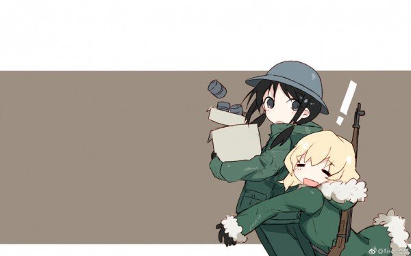

“和绝望好好相处下去吧” | 少女终末旅行
少女终末旅行所讲的是一个末世下非常平静的故事。
平静是我看完后的第一感觉，也是我能想出描述这部作品最合适的词。无论是剧情、画面还是配乐，都是往这一词上靠，使得整部作品的氛围都很平静。
这部公路片没有太多剧情，甚至可以说几乎没有，“两个少女在末世中旅行”这样简单的话语就完全概括了整个故事。在这样的故事中，却总有细小的点可以触动我。
第五集结尾，少女在避雨之时好奇地将各种东西摆在雨中，听到了雨点所奏出的乐曲，第一次认识到了音乐这个概念，与此同时雨だれの歌响起，平静中透露出一股温馨。
少女们目送着石井终于乘上飞机离开，飞了不久却在天空中支离破碎，几年的心血付之东流，所幸有降落伞，心里想着“这样反而更轻松了吧”。
少女们偶然发现了操纵武器的终端，仅仅是按下按钮，一座城市便陷入火海，仿佛是一场无人的战争。
在Nuko的帮助下，少女们得以看到相机中存储的过去的照片和视频，有温馨的、有残酷的，有些描绘的是诞生之初，有些描绘的是毁灭之时，无论如何，这记录的都是人类曾经存在的证明。
……
给我带来触动的也并非全都是剧情，也有这个故事背后所传达的一些东西。对我来说这样的内涵不好表达，也不会表达，最好的方法就是感受，一边看着绝望与温馨交织出来的故事，一边思考，便会稍有收获了吧。
巧合的是与少终同年播出的来自深渊也是同样一部用着温馨的画风讲着残酷故事的动画，仔细一想这样的作品还有不少，可能这就是萌系画风和黑暗故事交织产生的奇妙火花吧。
